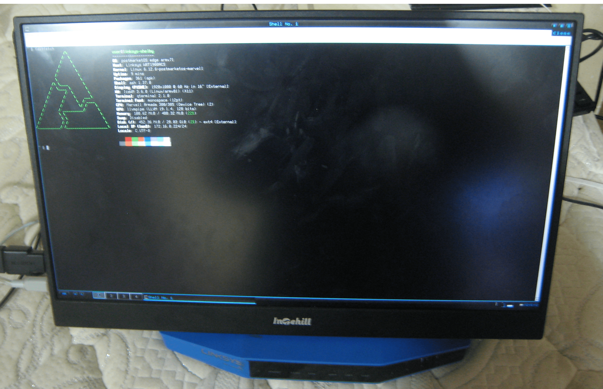

Linksys WRT1900ACS/WRT1900ACS V2 (linksys-shelby)
| pmOS can't run on its internal storage.However, it's possible to boot pmOS from USB Stick. |
|
 A portable monitor connected to WRT1900ACS via USB GPU | |
| Manufacturer | Linksys |
|---|---|
| Name |
WRT1900ACS/ WRT1900ACS V2 |
| Codename | linksys-shelby |
| Released | 2015 |
| Type | router |
| Hardware | |
| Chipset | Marvell Armada 385 (88F6820) |
| CPU | Dual-core 1.2 GHz Cortex-A9 |
| GPU | none |
| Display | none |
| Storage | 128MB |
| Memory | 512MB |
| Architecture | armv7 |
| postmarketOS | |
| Category | testing |
| Pre-built images | no |
| Mainline | yes |
{kind=link}
| Flashing |
Broken
|
|---|---|
| Internal storage |
Partial
|
| Connectivity | |
| WiFi |
Broken
|
| Ethernet |
Works
|
| Miscellaneous | |
| FDE | |
| USB-A |
Works
|
| SATA/eSATA |
Works
|
| Primary Bootloader |
Works
|
|---|---|
| Secondary Bootloader | |
| Mainline |
Broken
|
| Internal Storage |
Works
|
| USB Host |
Partial
|
Contributors
Users owning this device
Default Boot Behavior
nandboot and altnandboot environment variable do not contain any code that is for booting on external drive. |
The device 's stock uboot is like any other u-boot,it will run commands that are saved in the bootcmd environment variable. However unlike other u-boot, the bootcmd is always setted to ether run nandboot (Run the command that in nandboot environment variable) or run altnandboot (Run the command that in altnandboot environment variable) depend on whoever it booting off the primary firmware (Slot A in android term) or the alternate firmware (Slot B in android term) .
Installation
Installing pmOS to your disk
| WARNING: DO NOT PLUG multiple USB stick into the router during boot if you decided to use usb stick to boot pmos.If you do have multiple USB stick pluged in druing boot , please make sure the usb 0 in u-boot is the pm os usb stick. |
| WARNING: DO NOT PLUG multiple SATA drive into the router during boot if you decided to use SATA drive to boot pmos.If you do have multiple SATA drive pluged in druing boot , please make sure the scsi 0 in u-boot is the pm os usb stick. |
| The usb 3 port dont work in stock u-boot so please plug the pmos usb stick into the esata/usb combo plug |
Use pmbootstrap to build your own image, like so:
$ pmbootstrap init
$ pmbootstrap install --sdcard=/dev/sdX # change 'sdX' with the path of your USB drive
After creating your pmOS image, connect to your device via UART.
Booting
Due to the boot behavior mention above , pmOS wouldnt boot automatically when it got powered on.Therefore we need manually boot pmos from uboot shell or make it automatically boot from external drive by modify either nandboot environment variable or altnandboot environment variable.
Modify environment variable
In this section, we will modifying the default environment variable for making pmOS automatically boot when the device is powered on and a pmOS drive is plugged in.
After you has those command at below,run those command to reboot
Marvell# reset
altnandboot
In this section, we will modifying the altnandboot environment variable for making pmOS automatically boot when the device is powered on and a pmOS drive is plugged in.
USB Stick
Run these commands to modify the default altnandboot environment variable for making pmOS automatically boot when the device is powered on and a pmOS USB stick is plugged in:
Marvell# setenv altnandboot_stock ${altnandboot}
Marvell# setenv altnandboot "usb start;ext2load usb 0 ${kernel_addr_r} uImage;ext2load usb 0 ${ramdisk_addr_r} uInitrd;bootm ${kernel_addr_r} ${ramdisk_addr_r};run altnandboot_stock"
Marvell# saveenvSATA Drive
Run these commands to modify the default altnandboot environment variable for making pmOS automatically boot when the device is powered on and a pmOS SATA Drive is plugged in:
Marvell# setenv altnandboot_stock ${altnandboot}
Marvell# setenv altnandboot "scsi init;ext2load scsi 0 ${kernel_addr_r} uImage;ext2load scsi 0 ${ramdisk_addr_r} uInitrd;bootm ${kernel_addr_r} ${ramdisk_addr_r};run altnandboot_stock"
Marvell# saveenvnandboot
In this section, we will modifying the nandboot environment variable for making pmOS automatically boot when the device is powered on and a pmOS drive is plugged in.
USB Stick
Run these commands to modify the default altnandboot environment variable for making pmOS automatically boot when the device is powered on and a pmOS USB stick is plugged in:
Marvell# setenv nandboot_stock ${altnandboot}
Marvell# setenv nandboot "usb start;ext2load usb 0 ${kernel_addr_r} uImage;ext2load usb 0 ${ramdisk_addr_r} uInitrd;bootm ${kernel_addr_r} ${ramdisk_addr_r};run nandboot_stock"
Marvell# saveenvSATA Drive
Run these commands to modify the default altnandboot environment variable for making pmOS automatically boot when the device is powered on and a pmOS SATA Drive is plugged in:
Marvell# setenv nandboot_stock ${altnandboot}
Marvell# setenv nandboot "scsi init;ext2load scsi 0 ${kernel_addr_r} uImage;ext2load scsi 0 ${ramdisk_addr_r} uInitrd;bootm ${kernel_addr_r} ${ramdisk_addr_r};run nandboot_stock"
Marvell# saveenvManually boot pmos
In this section, we will manually boot pmos
USB Stick
Run these commands to manually boot pmOS from usb stick:
Marvell# usb start
Marvell# ext2load usb 0 ${kernel_addr_r} uImage
Marvell# ext2load usb 0 ${ramdisk_addr_r} uInitrd
Marvell# bootm ${kernel_addr_r} ${ramdisk_addr_r}SATA Drive
Run these commands to manually boot pmOS from sata drive:
Marvell# scsi init
Marvell# ext2load scsi 0 ${kernel_addr_r} uImage
Marvell# ext2load scsi 0 ${ramdisk_addr_r} uInitrd
Marvell# bootm ${kernel_addr_r} ${ramdisk_addr_r}Wifi
Out of tree kernel module is required for it to work and that module is not packaged under pmos.
Ethernet/Switch
Work
those ethernet port that is connected into the switch showed up in ip a just like a normal ethernet device.
Esata/Usb combo port
Esata
Work
(It have been tested with sdd/hdd However it haven't been tested with sata multiplier under pmos.)
Usb
Work
Usb 3 Port
Work